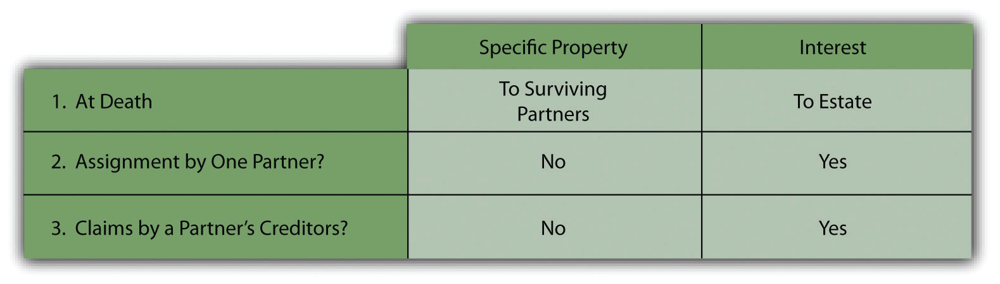
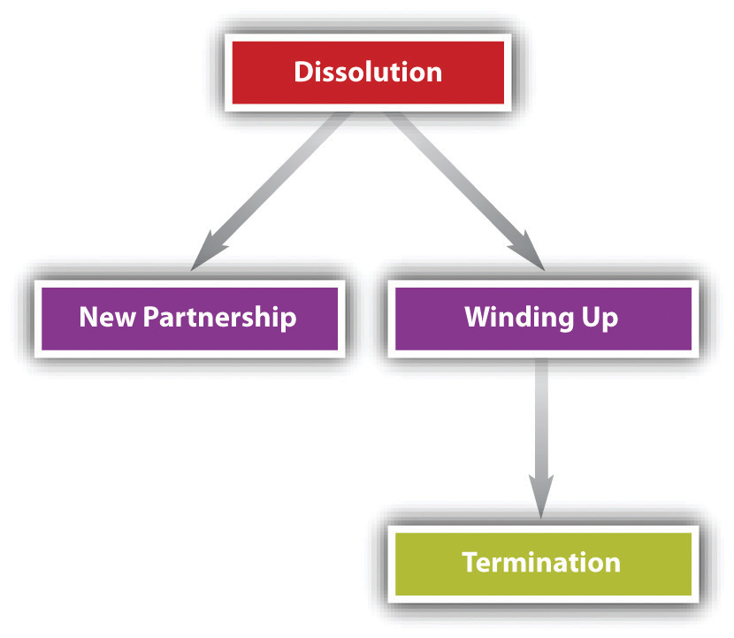
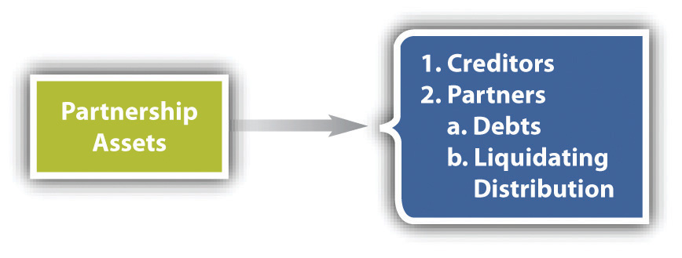

After reading this chapter, you should understand the following:
Most of the rules discussed in this section apply unless otherwise agreed, and they are really intended for the small firm.“The basic mission of RUPA is to serve the small firm. Large partnerships can fend for themselves by drafting partnership agreements that suit their special needs.” Donald J. Weidner, “RUPA and Fiduciary Duty: The Texture of Relationship,” Law and Contemporary Problems 58, no. 2 (1995): 81, 83. The Uniform Partnership Act (UPA) and the Revised Uniform Partnership Act (RUPA) do not dictate what the relations among partners must be; the acts supply rules in the event that the partners have not done so for themselves. In this area, it is especially important for the partners to elaborate their agreement in writing. If the partners should happen to continue their business beyond the term fixed for it in their agreement, the terms of the agreement continue to apply.
Among the duties partners owe each other, six may be called out here: (1) the duty to serve, (2) the duty of loyalty, (3) the duty of care, (4) the duty of obedience, (5) the duty to inform copartners, and (6) the duty to account to the partnership. These are all very similar to the duty owed by an agent to the principal, as partnership law is based on agency concepts.Revised Uniform Partnership Act, Section 404, Comment 3: “Indeed, the law of partnership reflects the broader law of principal and agent, under which every agent is a fiduciary.”
Unless otherwise agreed, expressly or impliedly, a partner is expected to work for the firm. The partnership, after all, is a profit-making co-venture, and it would not do for one to loaf about and still expect to get paid. For example, suppose Joan takes her two-week vacation from the horse-stable partnership she operates with Sarah and Sandra. Then she does not return for four months because she has gone horseback riding in the Southwest. She might end up having to pay if the partnership hired a substitute to do her work.
In general, this requires partners to put the firm’s interests ahead of their own. Partners are fiduciaries as to each other and as to the partnership, and as such, they owe a fiduciary dutyThe highest duty of good faith and trust, imposed on partners as to each other and the firm. to each other and the partnership. Judge Benjamin Cardozo, in an often-quoted phrase, called the fiduciary duty “something stricter than the morals of the market place. Not honesty alone, but the punctilio of an honor the most sensitive, is then the standard of behavior.”Meinhard v. Salmon, 164 N.E. 545 (N.Y. 1928). Breach of the fiduciary duty gives rise to a claim for compensatory, consequential, and incidental damages; recoupment of compensation; and—rarely—punitive damages. See Section 23.4.1 "Breach of Partnership Fiduciary Duty", Gilroy v. Conway, for an example of breach of fiduciary duty.
Under UPA, all partners are fiduciaries of each other—they are all principals and agents of each other—though the word fiduciary was not used except in the heading to Section 21. The section reads, “Every partner must account to the partnership for any benefit, and hold as trustee for it any profits derived by him without the consent of the other partners from any transaction connected with the formation, conduct, or liquidation of the partnership or from any use by him of its property.”
Section 404 of RUPA specifically provides that a partner has a fiduciary duty to the partnership and other partners. It imposes the fiduciary standard on the duty of loyalty in three circumstances:
(1) to account to the partnership and hold as trustee for it any property, profit, or benefit derived by the partner in the conduct and winding up of the partnership business or derived from a use by the partner of partnership property, including the appropriation of a partnership opportunity;
(2) to refrain from dealing with the partnership in the conduct or winding up of the partnership business as or on behalf of a party having an interest adverse to the partnership; and
(3) to refrain from competing with the partnership in the conduct of the partnership business before the dissolution of the partnership.
This sets out a fairly limited scope for application of the fiduciary standard, which is reasonable because partners do not delegate open-ended control to their copartners. Further, there are some specific limits on how far the fiduciary duty reaches (which means parties are held to the lower standard of “good faith”). Here are two examples. First, RUPA—unlike UPA—does not extend to the formation of the partnership; Comment 2 to RUPA Section 404 says that would be inappropriate because then the parties are “really dealing at arm’s length.” Second, fiduciary duty doesn’t apply to a dissociated partner (one who leaves the firm—discussed in Section 23 "Dissociation") who can immediately begin competing without the others’ consent; and it doesn’t apply if a partner violates the standard “merely because the partner’s conduct furthers the partner’s own interest.”RUPA, Section 503(b)(2); RUPA, Section 404 (e). Moreover, the partnership agreement may eliminate the duty of loyalty so long as that is not “manifestly unreasonable.”RUPA, Section 103(2)(c).
The duty of loyalty means, again, that partners must put the firm’s interest above their own. Thus it is held that a partner
This is certainly not a comprehensive list, and courts will determine on a case-by-case basis whether the duty of loyalty has been breached.
Stemming from its roots in agency law, partnership law also imposes a duty of care on partners. Partners are to faithfully serve to the best of their ability. Section 404 of RUPA imposes the fiduciary standard on the duty of care, but rather confusingly: how does the “punctilio of an honor the most sensitive”—as Judge Cardozo described that standard—apply when under RUPA Section 404(c) the “the duty of care…is limited to refraining from engaging in grossly negligent or reckless conduct, intentional misconduct, or a knowing violation of law”? Recognize that a person can attend to business both loyally and negligently. For example, Alice Able, a partner in a law firm who is not very familiar with the firm’s computerized bookkeeping system, attempts to trace a missing check and in so doing erases a month’s worth of records. She has not breached her duty of care: maybe she was negligent, but not grossly negligent under RUPA Section 404(c). The partnership agreement may reduce the duty of care so long as it is not “unreasonably reduce[d]”; it may increase the standard too.RUPA, Section 103(2)(d); RUPA, Section 103.
The partnership is a contractual relationship among the partners; they are all agents and principals of each other. Expressly or impliedly that means no partner can disobey the partnership agreement or fail to follow any properly made partnership decision. This includes the duty to act within the authority expressly or impliedly given in the partnership agreement, and a partner is responsible to the other partners for damages or losses arising from unauthorized activities.
As in the agency relationship, a partner is expected to inform copartners of notices and matters coming to her attention that would be of interest to the partnership.
The partnership—and necessarily the partners—have a duty to allow copartners and their agents access to the partnership’s books and records and to provide “any information concerning the partnership’s business and affairs reasonably required for the proper exercise of the partner’s rights and duties under the partnership agreement [or this Act].”UPA, Sections 19 and 20; RUPA, Section 403. The fiduciary standard is imposed upon the duty to account for “it any property, profit, or benefit derived by [a] partner,” as noted in RUPA Section 404.RUPA, Section 404(1).
Necessarily, for every duty owed there is a correlative right. So, for example, if a partner has a duty to account, the other partners and the partnership have a right to an accounting. Beyond that, partners have recognized rights affecting the operation of the partnership.
Here we may call out the following salient rights: (1) to distributions of money, (2) to management, (3) to choose copartners, (4) to property of the partnership, (5) to assign partnership interest, and (6) to enforce duties and rights.
The purpose of a partnership is ultimately to distribute “money or other property from a partnership to a partner in the partner’s capacity.”RUPA, Section 101(3). There are, however, various types of money distributions, including profits (and losses), indemnification, capital, and compensation.
Profits and losses may be shared according to any formula on which the partners agree. For example, the partnership agreement may provide that two senior partners are entitled to 35 percent each of the profit from the year and the two junior partners are entitled to 15 percent each. The next year the percentages will be adjusted based on such things as number of new clients garnered, number of billable hours, or amount of income generated. Eventually, the senior partners might retire and each be entitled to 2 percent of the firm’s income, and the previous junior partners become senior, with new junior partners admitted.
If no provision is stated, then under RUPA Section 401(b), “each partner is entitled to an equal share of the partnership profits and is chargeable with a share of the partnership losses in proportion to the partner’s share of the profits.” Section 18(a) of the Uniform Partnership Act is to the same effect. The right to share in the profits is the reason people want to “make partner”: a partner will reap the benefits of other partners’ successes (and pay for their failures too). A person working for the firm who is not a partner is an associate and usually only gets only a salary.
A partner who incurs liabilities in the normal course of business or to preserve its business or property is entitled to indemnification (UPA Section 18(b), RUPA Section 401(c)). The liability is a loan owing to the partner by the firm.
When a partner joins a partnership, she is expected to make a capital contribution to the firm; this may be deducted from her share of the distributed profit and banked by the firm in its capital account. The law provides that “the partnership must reimburse a partner for an advance of funds beyond the amount of the partner’s agreed capital contribution, thereby treating the advance as a loan.”UPA, Section 18(c); RUPA, Section 401(d). A partner may get a return of capital under UPA after creditors are paid off if the business is wound down and terminated.UPA, Section 40(b); RUPA, Section 807(b).
Section 401(d) of RUPA provides that “a partner is not entitled to remuneration for services performed for the partnership, except for reasonable compensation for services rendered in winding up the business of the partnership”; UPA Section 18(f) is to the same effect. A partner gets his money from the firm by sharing the profits, not by a salary or wages.
All partners are entitled to share equally in the management and conduct of the business, unless the partnership agreement provides otherwise.UPA, Section 18(e); RUPA, Section 401(f). The partnership agreement could be structured to delegate more decision-making power to one class of partners (senior partners) than to others (junior partners), or it may give more voting weight to certain individuals. For example, perhaps those with the most experience will, for the first four years after a new partner is admitted, have more voting weight than the new partner.
A business partnership is often analogized to a marriage partnership. In both there is a relationship of trust and confidence between (or among) the parties; in both the poor judgment, negligence, or dishonesty of one can create liabilities on the other(s). In a good marriage or good partnership, the partners are friends, whatever else the legal relationship imposes. Thus no one is compelled to accept a partner against his or her will. Section 401(i) of RUPA provides, “A person may become a partner only with the consent of all of the partners.” UPA Section 18(g) is to the same effect; the doctrine is called delectus personaeThe theory that a new partner can only be admitted to a firm with the unanimous consent of all.. The freedom to select new partners, however, is not absolute. In 1984, the Supreme Court held that Title VII of the Civil Rights Act of 1964—which prohibits discrimination in employment based on race, religion, national origin, or sex—applies to partnerships.Hishon v. King & Spalding, 467 U.S. 69 (1984).
Partners are the owners of the partnership, which might not include any physical property; that is, one partner could contribute the building, furnishings, and equipment and rent those to the partnership (or those could count as her partnership capital contribution and become the partnership’s). But partnership property consists of all property originally advanced or contributed to the partnership or subsequently acquired by purchase or contribution. Unless a contrary intention can be shown, property acquired with partnership funds is partnership property, not an individual partner’s: “Property acquired by a partnership is property of the partnership and not of the partners individually.”RUPA, Section 203; UPA, Sections 8(1) and 25.
Suppose that Able, who contributed the building and grounds on which the partnership business is conducted, suddenly dies. Who is entitled to her share of the specific property, such as inventory, the building, and the money in the cash register—her husband and children, or the other partners, Baker and Carr? Section 25(1) of UPA declares that the partners hold the partnership property as tenants in partnershipUnder UPA, how partnership property is held by the partners: jointly.. As spelled out in Section 25(2), the specific property interest of a tenant in partnership vests in the surviving partners, not in the heirs. But the heirs are entitled to the deceased partner’s interest in the partnership itself, so that while Baker and Carr may use the partnership property for the benefit of the partnership without consulting Able’s heirs, they must account to her heirs for her proper share of the partnership’s profits.
Section 501 of RUPA provides, “A partner is not a co-owner of partnership property and has no interest in partnership property which can be transferred, either voluntarily or involuntarily.” Partnership property is owned by the entity; UPA’s concept of tenants in partnership is abolished in favor of adoption of the entity theory. The result, however, is not different.
One of the hallmarks of the capitalistic system is that people should be able to dispose of their property interests more or less as they see fit. Partnership interests may be assigned to some extent.
At common law, assignment of a partner’s interest in the business—for example, as a mortgage in return for a loan—would result in a legal dissolution of the partnership. Thus in the absence of UPA, which changed the law, Baker’s decision to mortgage his interest in the car dealership in return for a $20,000 loan from his bank would mean that the three—Able, Baker, and Carr—were no longer partners. Section 27 of UPA declares that assignment of an interest in the partnership neither dissolves the partnership nor entitles the assignee “to interfere in the management or administration of the partnership business or affairs, or to require any information or account of partnership transactions, or to inspect the partnership books.” The assignment merely entitles the assignee to receive whatever profits the assignor would have received—this is the assignor’s transferable interest.UPA, Section 26. Under UPA, this interest is assignable.UPA, Section 27.
Under RUPA, the same distinction is made between a partner’s interest in the partnership and a partner’s transferable interest. The Official Comment to Section 101 reads as follows: “‘Partnership interest’ or ‘partner’s interest in the partnership’ is defined to mean all of a partner’s interests in the partnership, including the partner’s transferable interest and all management and other rights. A partner’s ‘transferable interest’ is a more limited concept and means only his share of the profits and losses and right to receive distributions, that is, the partner’s economic interests.”RUPA, Official Comment to Section 101.
This transferable interest is assignable under RUPA 503 (unless the partners agree to restrict transfers, Section 103(a)). It does not, by itself, cause the dissolution of the partnership; it does not entitle the transferee to access to firm information, to participate in running the firm, or to inspect or copy the books. The transferee is entitled to whatever distributions the transferor partner would have been entitled to, including, upon dissolution of the firm, the net amounts the transferor would have received had there been no assignment.
RUPA Section 101(b)(3) confers standing on a transferee to seek a judicial dissolution and winding up of the partnership business as provided in Section 801(6), thus continuing the rule of UPA Section 32(2). But under RUPA 601(4)(ii), the other partners may by unanimous vote expel a partner who has made “a transfer of all or substantially all of that partner’s transferable interest in the partnership, other than a transfer for security purposes [as for a loan].” Upon a creditor foreclosure of the security interest, though, the partner may be expelled.
It may be a misnomer to describe an involuntary assignment as a “right”; it might better be thought of as a consequence of the right to own property. In any event, if a partner is sued in his personal capacity and a judgment is rendered against him, the question arises: may the judgment creditor seize partnership property? Section 28 of UPA and RUPA Section 504 permit a judgment creditor to obtain a charging orderA court order directing a partnership to pay a partner’s judgment creditor the distribution that the partner would normally receive., which charges the partner’s interest in the partnership with obligation to satisfy the judgment. The court may appoint a receiver to ensure that partnership proceeds are paid to the judgment creditor. But the creditor is not entitled to specific partnership property. The partner may always pay off the debt and redeem his interest in the partnership. If the partner does not pay off the debt, the holder of the charging order may acquire legal ownership of the partner’s interest. That confers upon the judgment creditor an important power: he may, if the partnership is one at will, dissolve the partnership and claim the partner’s share of the assets. For that reason, the copartners might wish to redeem the interest—pay off the creditor—in order to preserve the partnership. As with the voluntary assignment, the assignee of an involuntary assignment does not become a partner. See Figure 23.1 "Property Rights".
Figure 23.1 Property Rights
The rights and duties imposed by partnership law are, of course, valueless unless they can be enforced. Partners and partnerships have mechanisms under the law to enforce them.
We noted in Section 23.1.1 "Duties Partners Owe Each Other" of this chapter that partners have a duty to account; the corollary right is the right to access books and records, which is usually very important in determining partnership rights. Section 403(b) of RUPA provides, “A partnership shall provide partners and their agents and attorneys access to its books and records. It shall provide former partners and their agents and attorneys access to books and records pertaining to the period during which they were partners. The right of access provides the opportunity to inspect and copy books and records during ordinary business hours. A partnership may impose a reasonable charge, covering the costs of labor and material, for copies of documents furnished.”RUPA Section 403(b).
Section 19 of UPA is basically in accord. This means that without demand—and for any purpose—the partnership must provide any information concerning its business and affairs reasonably required for the proper exercise of the partner’s rights and duties under the partnership agreement or the act; and on demand, it must provide any other information concerning the partnership’s business and affairs, unless the demand is unreasonable or improper.RUPA, Section 403(c)(1); RUPA, Section 403(c)(2). Generally, the partnership agreement cannot deny the right to inspection.
The duty to account mentioned in Section 23.1.1 "Duties Partners Owe Each Other" of this chapter normally means that the partners and the partnership should keep reasonable records so everyone can tell what is going on. A formal accounting under UPA is different.
Under UPA Section 22, any partner is entitled to a formal account (or accounting) of the partnership affairs under the following conditions:
At common law, partners could not obtain an accounting except in the event of dissolution. But from an early date, equity courts would appoint a referee, auditor, or special master to investigate the books of a business when one of the partners had grounds to complain, and UPA broadened considerably the right to an accounting. The court has plenary power to investigate all facets of the business, evaluate claims, declare legal rights among the parties, and order money judgments against any partner in the wrong.
Under RUPA Section 405, this “accounting” business is somewhat modified. Reflecting the entity theory, the partnership can sue a partner for wrongdoing, which is not allowed under UPA. Moreover, to quote from the Official Comment, RUPA “provides that, during the term of the partnership, partners may maintain a variety of legal or equitable actions, including an action for an accounting, as well as a final action for an accounting upon dissolution and winding up. It reflects a new policy choice that partners should have access to the courts during the term of the partnership to resolve claims against the partnership and the other partners, leaving broad judicial discretion to fashion appropriate remedies[, and] an accounting is not a prerequisite to the availability of the other remedies a partner may have against the partnership or the other partners.”RUPA Official Comment 2, Section 405(b).
Partners have important duties in a partnership, including (1) the duty to serve—that is, to devote herself to the work of the partnership; (2) the duty of loyalty, which is informed by the fiduciary standard: the obligation to act always in the best interest of the partnership and not in one’s own best interest; (3) the duty of care—that is, to act as a reasonably prudent partner would; (4) the duty of obedience not to breach any aspect of the agreement or act without authority; (5) the duty to inform copartners; and (6) the duty to account to the partnership.
Partners also have rights. These include the rights (1) to distributions of money, including profits (and losses), indemnification, and return of capital contribution (but not a right to compensation); (2) to management; (3) to choose copartners; (4) to property of the partnership, and no partner has any rights to specific property; (5) to assign (voluntarily or involuntarily) the partnership interest; and (6) to enforce duties and rights by suits in law or equity. (Under RUPA, a formal accounting is not first required.)
By express terms, the law of agency applies to partnership law. Every partner is an agent of the partnership for the purpose of its business. Consequently, the following discussion will be a review of agency law, covered in Chapter 22 "Partnerships: General Characteristics and Formation" as it applies to partnerships. The Revised Uniform Partnership Act (RUPA) adds a few new wrinkles to the liability issue.
Recall that an agent can make contracts on behalf of a principal under three types of authority: express, implied, and apparent. Express authority is that explicitly delegated to the agent, implied authority is that necessary to the carrying out of the express authority, and apparent authority is that which a third party is led to believe has been conferred by the principal on the agent, even though in fact it was not or it was revoked. When a partner has authority, the partnership is bound by contracts the partner makes on its behalf. Section 23.4.2 "Partnership Authority, Express or Apparent", Hodge v. Garrett, discusses all three types of authority.
Section 305 of RUPA restates agency law: “A partnership is liable for loss or injury, or for a penalty incurred, as a result of a wrongful act or omission, or other actionable conduct, of a partner acting in the ordinary course”RUPA Section 305. of partnership business or with its authority. The ability of a partner to bind the partnership to contract liability is problematic, especially where the authority is apparent: the firm denies liability, lawsuits ensue, and unhappiness generally follows.
But the firm is not liable for an act not apparently in the ordinary course of business, unless the act was authorized by the others.RUPA, Section 301(2); UPA, Section 9(2). Section 401(j) of RUPA requires the unanimous consent of the partners for a grant of authority outside the ordinary course of business, unless the partnership agreement provides otherwise.
Under the Uniform Partnership Act (UPA) Section 9(3), the firm is not liable for five actions that no single partner has implied or apparent authority to do, because they are not “in the ordinary course of partnership.” These actions are: (1) assignment of partnership property for the benefit of creditors, (2) disposing of the firm’s goodwill (selling the right to do business with the firm’s clients to another business), (3) actions that make it impossible to carry on the business, (4) confessing a judgment against the partnership, and (5) submitting a partnership claim or liability. RUPA omits that section, leaving it to the courts to decide the outer limits of the agency power of a partner. In any event, unauthorized actions by a partner may be ratified by the partnership.
New under RUPA is the ability of partnerships, partners, or even nonpartners to issue and file “statements” that announce to the world the establishment or denial of authority. The goal here is to control the reach of apparent authority. There are several kinds of statements authorized.
A statement of partnership authorityA public filing setting out or limiting partners’ authority. is allowed by RUPA Section 303. It specifies the names of the partners authorized, or not authorized, to enter into transactions on behalf of the partnership and any other matters. The most important goal of the statement of authority is to facilitate the transfer of real property held in the name of the partnership. A statement must specify the names of the partners authorized to execute an instrument transferring that property.
A statement of denialA public filing that a partner has no authority to perform some act(s) on the firm’s behalf or that a person is not a partner., RUPA Section 304, operates to allow partners (and persons named as partners) an opportunity to deny any fact asserted in a statement of partnership authority.
A statement of dissociationA public filing that a partner is withdrawing from the firm., RUPA Section 704, may be filed by a partnership or a dissociated partner, informing the world that the person is no longer a partner. This tells the world that the named person is no longer in the partnership.
There are three other statements authorized: a statement of qualification establishes that the partnership has satisfied all conditions precedent to the qualification of the partnership as a limited liability partnership; a statement of foreign qualification means a limited liability partnership is qualified and registered to do business in a state other than that in which it is originally registered; and a statement of amendment or cancellation of any of the foregoing.RUPA, Section 1001(d); RUPA, Section 1102. Limited liability partnerships are taken up in Chapter 24 "Hybrid Business Forms".
Generally, RUPA Section 105 allows partnerships to file these statements with the state secretary of state’s office; those affecting real estate need to be filed with (or also with) the local county land recorder’s office. The notices bind those who know about them right away, and they are constructive notice to the world after ninety days as to authority to transfer real property in the partnership’s name, as to dissociation, and as to dissolution. However, as to other grants or limitations of authority, “only a third party who knows or has received a notification of a partner’s lack of authority in an ordinary course transaction is bound.”RUPA, Section 303, Comment 3.
Since RUPA is mostly intended to provide the rules for the small, unsophisticated partnership, it is questionable whether these arcane “statements” are very often employed.
It is clear that the partnership is liable for contracts by authorized partners, as discussed in the preceding paragraphs. The bad thing about the partnership as a form of business organization is that it imposes liability on the partners personally and without limit. Section 306 of RUPA provides that “all partners are liable jointly and severally for all obligations of the partnership unless otherwise agreed by the claimant or provided by law.”RUPA, Section 306. Section 13 of UPA is in accord.
Contract liability is joint and several: that is, all partners are liable (“joint”) and each is “several.” (We usually do not use several in modern English to mean “each”; it’s an archaic usage.) But—and here’s the intrusion of entity theory—generally RUPA requires the judgment creditor to exhaust the partnership’s assets before going after the separate assets of a partner. Thus under RUPA the partners are guarantors of the partnership’s liabilities.RUPA Section 306.
Under UPA, contract liability is joint only, not also several. This means the partners must be sued in a joint action brought against them all. A partner who is not named cannot later be sued by a creditor in a separate proceeding, though the ones who were named could see a proportionate contribution from the ones who were not.
Under RUPA Section 306(b), a new partner has no personal liability to existing creditors of the partnership, and only her capital investment in the firm is at risk for the satisfaction of existing partnership debts. Sections 17 and 41(7) of UPA are in accord. But, again, under either statute a new partner’s personal assets are at risk with respect to partnership liabilities incurred after her admission as a partner. This is a daunting prospect, and it is the reason for the invention of hybrid forms of business organization: limited partnerships, limited liability companies, and limited liability partnerships. The corporate form, of course, also (usually) obviates the owners’ personal liability.
The rules affecting partners’ tort liability (discussed in Section 23.2.1 "Contract Liability") and those affecting contract liability are the same. Section 13 of UPA says the partnership is liable for “any wrongful act or omission of any partner acting in the ordinary course of the business of the partnership or with the authority of his co-partners.”UPA, Section 13.A civil “wrongful act” is necessarily either a tort or a breach of contract, so no distinction is made between them. (Section 305 of RUPA changed the phraseology slightly by adding after any wrongful act or omission the words or other actionable conduct; this makes the partnership liable for its partner’s no-fault torts.) That the principal should be liable for its agents’ wrongdoings is of course basic agency law. RUPA does expand liability by allowing a partner to sue during the term of the partnership without first having to get out of it, as is required under UPA.
For tortious acts, the partners are said to be jointly and severally liable under both UPA and RUPA, and the plaintiff may separately sue one or more partners. Even after winning a judgment, the plaintiff may sue other partners unnamed in the original action. Each and every partner is separately liable for the entire amount of the debt, although the plaintiff is not entitled to recover more than the total of his damages. The practical effect of the rules making partners personally liable for partnership contracts and torts can be huge. In his classic textbook Economics, Professor Paul Samuelson observed that unlimited liability “reveals why partnerships tend to be confined to small, personal enterprises.…When it becomes a question of placing their personal fortunes in jeopardy, people are reluctant to put their capital into complex ventures over which they can exercise little control.…In the field of investment banking, concerns like JPMorgan Chase used to advertise proudly ‘not incorporated’ so that their creditors could have extra assurance. But even these concerns have converted themselves into corporate entities.”Paul A. Samuelson, Economics (New York: McGraw-Hill, 1973), 106.
Of course, a person is always liable for his own torts. All partners are also liable for any partner’s tort committed in the scope of partnership business under agency law, and this liability is—again—personal and unlimited, subject to RUPA’s requirement that the judgment creditor exhaust the partnership’s assets before going after the separate assets of the partners. The partner who commits a tort or breach of trust must indemnify the partnership for losses paid to the third party.RUPA, Section 405(a).
Criminal liability is generally personal to the miscreant. Nonparticipating copartners are ordinarily not liable for crimes if guilty intent is an element. When guilty intent is not an element, as in certain regulatory offenses, all partners may be guilty of an act committed by a partner in the course of the business.
Corporate income gets taxed twice under federal law: once to the corporation and again to the shareholders who receive income as dividends. However, the partnership’s income “passes through” the partnership and is distributed to the partners under the conduit theoryThe theory that a business entity does not itself owe taxes on income; it only acts as a pass-through for its members to receive income.. When partners get income from the firm they have to pay tax on it, but the partnership pays no tax (it files an information return). This is perceived to be a significant advantage of the partnership form.
The partnership is generally liable for any contract made by a partner with authority express, implied, or apparent. Under RUPA the firm, partners, or even nonpartners may to some extent limit their liability by filing “statements” with the appropriate state registrar; such statements only affect those who know of them, except that a notice affecting the right of a partner to sell real estate or regarding dissociation or dissolution is effective against the world after ninety days.
All partners are liable for contracts entered into and torts committed by any partner acting in or apparently in the normal course of business. This liability is personal and unlimited, joint and several (although under UPA contract liability it is only joint). Incoming partners are not liable, in contract or in tort, for activities predating their arrival, but their capital contribution is at risk. Criminal liability is generally personal unless the crime requires no intention.
It is said that a partnership is like a marriage, and that extends to its ending too. It’s easier to get into a partnership than it is to get out of it because legal entanglements continue after a person is no longer a partner. The rules governing “getting out” of a partnership are different under the Revised Uniform Partnership Act (RUPA) than under the Uniform Partnership Act (UPA). We take up UPA first.
Dissolution, in the most general sense, means a separation into component parts.
People in business are sometimes confused about the meaning of dissolutionA legal severance or breaking up; under UPA the change in relations caused by a partner’s withdrawal from the firm.. It does not mean the termination of a business. It has a precise legal definition, given in UPA Section 29: “The dissolution of a partnership is the change in the relation of the partners caused by any partner ceasing to be associated in the carrying on as distinguished from the winding up of the business.” The partnership is not necessarily terminated on dissolution; rather, it continues until the winding up of partnership affairs is completed, and the remaining partners may choose to continue on as a new partnership if they want.UPA, Section 30. But, again, under UPA the partnership dissolves upon the withdrawal of any partner.
Partnerships can dissolve for a number of reasons.UPA, Section 31.
The term of the partnership agreement may have expired or the partnership may be at will and one of the partners desires to leave it. All the partners may decide that it is preferable to dissolve rather than to continue. One of the partners may have been expelled in accordance with a provision in the agreement. In none of these circumstances is the agreement violated, though its spirit surely might have been. Professor Samuelson calls to mind the example of William Dean Howells’s Silas Lapham, who forces his partner to sell out by offering him an ultimatum: “You may buy me out or I’ll buy you out.” The ultimatum was given at a time when the partner could not afford to buy Lapham out, so the partner had no choice.
Dissolution may also result from violation of the agreement, as when the partners decide to discharge a partner though no provision permits them to do so, or as when a partner decides to quit in violation of a term agreement. In the former case, the remaining partners are liable for damages for wrongful dissolution, and in the latter case, the withdrawing partner is liable to the remaining partners the same way.
A third reason for dissolution is the occurrence of some event, such as enactment of a statute, that makes it unlawful to continue the business. Or a partner may die or one or more partners or the entire partnership may become bankrupt. Dissolution under these circumstances is said to be by operation of law.UPA, Section 31.
Finally, dissolution may be by court order. Courts are empowered to dissolve partnerships when “on application by or for a partner” a partner is shown to be a lunatic, of unsound mind, incapable of performing his part of the agreement, “guilty of such conduct as tends to affect prejudicially the carrying on of the business,” or otherwise behaves in such a way that “it is not reasonably practicable to carry on the business in partnership with him.” A court may also order dissolution if the business can only be carried on at a loss or whenever equitable. In some circumstances, a court will order dissolution upon the application of a purchaser of a partner’s interest.UPA, Section 32.
For the most part, dissolution terminates the authority of the partners to act for the partnership. The only significant exceptions are for acts necessary to wind up partnership affairs or to complete transactions begun but not finished at the time of dissolution.UPA, Section 33. Notwithstanding the latter exception, no partner can bind the partnership if it has dissolved because it has become unlawful to carry on the business or if the partner seeking to exercise authority has become bankrupt.
After a partnership has dissolved, it can follow one of two paths. It can carry on business as a new partnership, or it can wind up the business and cease operating (see Figure 23.2 "Alternatives Following UPA Dissolution").
Figure 23.2 Alternatives Following UPA Dissolution
In order to carry on the business as a new partnership, there must be an agreement—preferably as part of the original partnership agreement but maybe only after dissolution (and maybe oral)—that upon dissolution (e.g., if a partner dies, retires, or quits) the others will regroup and carry on.
Under UPA the remaining partners have the right to carry on when (1) the dissolution was in contravention of the agreement, (2) a partner was expelled according to the partnership agreement, or (3) all partners agree to carry on.UPA, Sections 37 and 38.
Whether the former partner dies or otherwise quits the firm, the noncontinuing one or his, her, or its legal representative is entitled to an accounting and to be paid the value of the partnership interest, less damages for wrongful dissolution.UPA, Section 38. The firm may need to borrow money to pay the former partner or her estate; or, in the case of a deceased partner, the money to pay the former partner is obtained through a life insurance buyout policy.
Partnerships routinely insure the lives of the partners, who have no ownership interests in the insurance policies. The policies should bear a face amount equal to each partner’s interest in the partnership and should be adjusted as the fortunes of the partnership change. Proceeds of the insurance policy are used on death to pay the purchase price of the interest inherited by the deceased’s estate. If the insurance policy pays out more than the interest at stake, the partnership retains the difference. If the policy pays out less, the partnership agrees to pay the difference in installments.
Another set of issues arises when the partnership changes because an old partner departs and a new one joins. Suppose that Baker leaves the car dealership business and his interest is purchased by Alice, who is then admitted to the partnership. Assume that when Baker left, the business owed Mogul Parts Company $5,000 and Laid Back Upholsterers $4,000. After Baker left and Alice joined, Mogul sells another $5,000 worth of parts to the firm on credit, and Sizzling Radiator Repair, a new creditor, advances $3,000 worth of radiator repair parts. These circumstances pose four questions.
First, do creditors of the old partnership remain creditors of the new partnership? Yes.UPA, Section 41(1).
Second, does Baker, the old partner, remain liable to the creditors of the old partnership? Yes.UPA, Section 36(1). That could pose uncomfortable problems for Baker, who may have left the business because he lost interest in it and wished to put his money elsewhere. The last thing he wants is the threat of liability hanging over his head when he can no longer profit from the firm’s operations. That is all the more true if he had a falling out with his partners and does not trust them. The solution is given in UPA Section 36(2), which says that an old partner is discharged from liability if the creditors and the new partnership agree to discharge him.
Third, is Alice, the new partner, liable to creditors of the old partnership? Yes, but only to the extent of her capital contribution.UPA, Section 17.
Fourth, is Baker, the old partner, liable for debts incurred after his withdrawal from the partnership? Surprisingly, yes, unless Baker takes certain action toward old and new creditors. He must provide actual notice that he has withdrawn to anyone who has extended credit in the past. Once he has done so, he has no liability to these creditors for credit extended to the partnership thereafter. Of course, it would be difficult to provide notice to future creditors, since at the time of withdrawal they would not have had a relationship with the partnership. To avoid liability to new creditors who knew of the partnership, the solution required under UPA Section 35(l)(b)(II) is to advertise Baker’s departure in a general circulation newspaper in the place where the partnership business was regularly carried on.
Because the differences between UPA’s and RUPA’s provisions for winding up and termination are not as significant as those between their provisions for dissolution, the discussion for winding up and termination will cover both acts at once, following the discussion of dissociation and dissolution under RUPA.
Comment 1 to RUPA Section 601 is a good lead-in to this section. According to the comment, RUPA dramatically changes the law governing partnership breakups and dissolution. An entirely new concept, “dissociation,” is used in lieu of UPA term “dissolution” to denote the change in the relationship caused by a partner’s ceasing to be associated in the carrying on of the business. “Dissolution” is retained but with a different meaning. The entity theory of partnership provides a conceptual basis for continuing the firm itself despite a partner’s withdrawal from the firm.
Under UPA, the partnership is an aggregate, a collection of individuals; upon the withdrawal of any member from the collection, the aggregate dissolves. But because RUPA conforms the partnership as an entity, there is no conceptual reason for it to dissolve upon a member’s withdrawal. “Dissociation” occurs when any partner ceases to be involved in the business of the firm, and “dissolution” happens when RUPA requires the partnership to wind up and terminate; dissociation does not necessarily cause dissolution.
DissociationUnder RUPA, the withdrawal of a partner from the firm., as noted in the previous paragraph, is the change in relations caused by a partner’s withdrawal from the firm’s business.
Dissociation is caused in ten possible ways: (1) a partner says she wants out; (2) an event triggers dissociation as per the partnership agreement; (3) a partner is expelled as per the agreement; (4) a partner is expelled by unanimous vote of the others because it is unlawful to carry on with that partner, because that partner has transferred to a transferee all interest in the partnership (except for security purposes), or because a corporate partner’s or partnership partner’s existence is effectively terminated; (5) by a court order upon request by the partnership or another partner because the one expelled has been determined to have misbehaved (engaged in serious wrongful conduct, persists in abusing the agreement, acts in ways making continuing the business impracticable); (6) the partner has declared bankruptcy; (7) the partner has died or had a guardian appointed, or has been adjudicated as incompetent; (8) the partner is a trust whose assets are exhausted; (9) the partner is an estate and the estate’s interest in the partnership has been entirely transferred; (10) the partner dies or, if the partner is another partnership or a corporation trust or estate, that entity’s existence is terminated.RUPA, Section 601.
After a partner dissociates, the partner’s right to participate in management terminates. (However, if the dissociation goes on to dissolution and winding up, partners who have not wrongfully caused the dissociation may participate in winding-up activities.)RUPA. Sections 603(b) and 804(a). The dissociated partner’s duty of loyalty and care terminates; the former partner may compete with the firm, except for matters arising before the dissociation.RUPA, Section 603(b)(3).
When partners come and go, as they do, problems may arise. What power does the dissociated partner have to bind the partnership? What power does the partnership have to impose liability on the dissociated one? RUPA provides that the dissociated partner loses any actual authority upon dissociation, and his or her apparent authority lingers for not longer than two years if the dissociated one acts in a way that would have bound the partnership before dissociation, provided the other party (1) reasonably believed the dissociated one was a partner, (2) did not have notice of the dissociation, and (3) is not deemed to have constructive notice from a filed “statement of dissociation.”RUPA, Section 603(b)(1). The dissociated partner, of course, is liable for damages to the partnership if third parties had cause to think she was still a partner and the partnership became liable because of that; she is liable to the firm as an unauthorized agent.RUPA, Section 702.
A partner’s dissociation does nothing to change that partner’s liability for predissociation obligations.RUPA, Section 703(a). For postdissociation liability, exposure is for two years if at the time of entering into the transaction the other party (1) reasonably believed the dissociated one was a partner, (2) didn’t have notice of the dissociation, and (3) is not deemed to have constructive notice from a filed “statement of dissociation.” For example, Baker withdraws from the firm of Able, Baker, and Carr. Able contracts with HydroLift for a new hydraulic car lift that costs $25,000 installed. HydroLift is not aware at the time of contracting that Baker is disassociated and believes she is still a partner. A year later, the firm not having been paid, HydroLift sues Able, Baker, and Carr and the partnership. Baker has potential liability. Baker could have protected herself by filing a “statement of dissociation,” or—better—the partnership agreement should provide that the firm would file such statements upon the dissociation of any partner (and if it does not, it would be liable to her for the consequences).
Dissociation does not necessarily cause dissolution (see the discussion later in this section of how the firm continues after a dissociation); dissolution and winding up happen only for the causes stated in RUPA Section 801, discussed in the following paragraphs.
There are three causes of dissolution: (1) by act of the partners—some dissociations do trigger dissolution; (2) by operation of law; or (3) by court order. The partnership agreement may change or eliminate the dissolution trigger as to (1); dissolution by the latter two means cannot be tinkered with.RUPA, Section 103.
(1) Dissolution by act of the partners may occur as follows:
(2) Dissolution will happen in some cases by operation of law if it becomes illegal to continue the business, or substantially all of it. For example, if the firm’s business was the manufacture and distribution of trans fats and it became illegal to do that, the firm would dissolve.Trans fats are hydrogenated vegetable oils; the process of hydrogenation essentially turns the oils into semisolids, giving them a higher melting point and extending their shelf life but, unfortunately, also clogging consumers’ arteries and causing heart disease. California banned their sale effective January 1, 2010; other jurisdictions have followed suit. This cause of dissolution is not subject to partnership agreement.
(3) Dissolution by court order can occur on application by a partner. A court may declare that it is, for various reasons specified in RUPA Section 801(5), no longer reasonably practicable to continue operation. Also, a court may order dissolution upon application by a transferee of a partner’s transferable interest or by a purchaser at a foreclosure of a charging order if the court determines it is equitable. For example, if Creditor gets a charging order against Paul Partner and the obligation cannot reasonably be paid by the firm, a court could order dissolution so Creditor would get paid from the liquidated assets of the firm.
A partnership continues after dissolution only for the purpose of winding up its business. The partnership is terminated when the winding up of its business is completed.RUPA, Section 802. However, before winding up is completed, the partners—except any wrongfully dissociating—may agree to carry on the partnership, in which case it resumes business as if dissolution never happened.RUPA, Section 802(b).
Dissociation, again, does not necessarily cause dissolution. In an at-will partnership, the death (including termination of an entity partner), bankruptcy, incapacity, or expulsion of a partner will not cause dissolution.RUPA, Sections 601 and 801. In a term partnership, the firm continues if, within ninety days of an event triggering dissociation, fewer than half the partners express their will to wind up. The partnership agreement may provide that RUPA’s dissolution-triggering events, including dissociation, will not trigger dissolution. However, the agreement cannot change the rules that dissolution is caused by the business becoming illegal or by court order. Creditors of the partnership remain as before, and the dissociated partner is liable for partnership obligations arising before dissociation.
Section 701 of RUPA provides that if the firm continues in business after a partner dissociates, without winding up, then the partnership must purchase the dissociated partner’s interest; RUPA Section 701(b) explains how to determine the buyout price. It is the amount that would have been distributed to the dissociated partner if, on the date of dissociation, the firm’s assets were sold “at a price equal to the greater of the liquidation value or the value based on a sale of the entire business as a going concern,” minus damages for wrongful dissociation. A wrongful dissociater may have to wait a while to get paid in full, unless a court determines that immediate payment “will not cause an undue hardship to the partnership,” but the longest nonwrongful dissociaters need to wait is 120 days.RUPA, Section 701(e). A dissociated partner can sue the firm to determine the buyout price and the court may assess attorney’s, appraiser’s, and expert’s fees against a party the court finds “acted arbitrarily, vexatiously, or in bad faith.”RUPA, Section 701(h)(4)(i).
If the partners decide not to continue the business upon dissolution, they are obliged to wind up the business. The partnership continues after dissolution only for the purpose of winding up its business, after which it is terminated.UPA, Section 30; RUPA, Section 802(a). Winding upFinishing the business at hand, settling accounts, and terminating a firm. entails concluding all unfinished business pending at the date of dissolution and payment of all debts. The partners must then settle accounts among themselves in order to distribute the remaining assets. At any time after dissolution and before winding up is completed, the partners (except a wrongfully dissociated one) can stop the process and carry on the business.
UPA and RUPA are not significantly different as to winding up, so they will be discussed together. Two issues are discussed here: who can participate in winding up and how the assets of the firm are distributed on liquidation.
The partners who have not wrongfully dissociated may participate in winding up the partnership business. On application of any partner, a court may for good cause judicially supervise the winding up.UPA, Section 37; RUPA, Section 803(a).
Determining the priority of liabilities can be problematic. For instance, debts might be incurred to both outside creditors and partners, who might have lent money to pay off certain accounts or for working capital.
An agreement can spell out the order in which liabilities are to be paid, but if it does not, UPA Section 40(a) and RUPA Section 807(1) rank them in this order: (1) to creditors other than partners, (2) to partners for liabilities other than for capital and profits, (3) to partners for capital contributions, and finally (4) to partners for their share of profits (see Figure 23.3 "Priority Partnership Liabilities under RUPA"). However, RUPA eliminates the distinction between capital and profits when the firm pays partners what is owed to them; RUPA Section 807(b) speaks simply of the right of a partner to a liquidating distribution.
Figure 23.3 Priority Partnership Liabilities under RUPA
Partners are entitled to share equally in the profits and surplus remaining after all liabilities, including those owed to partners, are paid off, although the partnership agreement can state a different share—for example, in proportion to capital contribution. If after winding up there is a net loss, whether capital or otherwise, each partner must contribute toward it in accordance with his share in the profits, had there been any, unless the agreement states otherwise. If any of the partners is insolvent or refuses to contribute and cannot be sued, the others must contribute their own share to pay off the liabilities and in addition must contribute, in proportion to their share of the profits, the additional amount necessary to pay the liabilities of their defaulting partners.
In the event of insolvency, a court may take possession of both partnership property and individual assets of the partners; this again is a big disadvantage to the partnership form.
The estate of a deceased partner is credited or liable as that partner would have been if she were living at the time of the distribution.
Under UPA, the withdrawal of any partner from the partnership causes dissolution; the withdrawal may be caused in accordance with the agreement, in violation of the agreement, by operation of law, or by court order. Dissolution terminates the partners’ authority to act for the partnership, except for winding up, but remaining partners may decide to carry on as a new partnership or may decide to terminate the firm. If they continue, the old creditors remain as creditors of the new firm, the former partner remains liable for obligations incurred while she was a partner (she may be liable for debts arising after she left, unless proper notice is given to creditors), and the former partner or her estate is entitled to an accounting and payment for the partnership interest. If the partners move to terminate the firm, winding up begins.
Under RUPA, a partner who ceases to be involved in the business is dissociated, but dissociation does not necessarily cause dissolution. Dissociation happens when a partner quits, voluntarily or involuntarily; when a partner dies or becomes incompetent; or on request by the firm or a partner upon court order for a partner’s wrongful conduct, among other reasons. The dissociated partner loses actual authority to bind the firm but remains liable for predissociation obligations and may have lingering authority or lingering liability for two years provided the other party thought the dissociated one was still a partner; a notice of dissociation will, after ninety days, be good against the world as to dissociation and dissolution. If the firm proceeds to termination (though partners can stop the process before its end), the next step is dissolution, which occurs by acts of partners, by operation of law, or by court order upon application by a partner if continuing the business has become untenable. After dissolution, the only business undertaken is to wind up affairs. However, the firm may continue after dissociation; it must buy out the dissociated one’s interest, minus damages if the dissociation was wrongful.
If the firm is to be terminated, winding up entails finishing the business at hand, paying off creditors, and splitting the remaining surplus or liabilities according the parties’ agreement or, absent any, according to the relevant act (UPA or RUPA).
Gilroy v. Conway
391 N.W. 2d 419 (Mich. App. 1986)
PETERSON, J.
Defendant cheated his partner and appeals from the trial court’s judgment granting that partner a remedy.
Plaintiff was an established commercial photographer in Kalamazoo who also had a partnership interest in another photography business, Colonial Studios, in Coldwater. In 1974, defendant became plaintiff’s partner in Colonial Studios, the name of which was changed to Skylight Studios. Under the partnership agreement, defendant was to be the operating manager of the partnership, in return for which he would have a guaranteed draw. Except for the guaranteed draw, the partnership was equal in ownership and the sharing of profits.
Prior to defendant’s becoming a partner, the business had acquired a small contractual clientele of schools for which the business provided student portrait photographs. The partners agreed to concentrate on this type of business, and both partners solicited schools with success. Gross sales, which were $40,000 in 1974, increased every year and amounted to $209,085 in 1980 [about $537,000 in 2011 dollars].
In the spring of 1981, defendant offered to buy out plaintiff and some negotiations followed. On June 25, 1981, however, plaintiff was notified by the defendant that the partnership was dissolved as of July 1, 1981. Plaintiff discovered that defendant: had closed up the partnership’s place of business and opened up his own business; had purchased equipment and supplies in preparation for commencing his own business and charged them to the partnership; and had taken with him the partnership employees and most of its equipment.
Defendant had also stolen the partnership’s business. He had personally taken over the business of some customers by telling them that the partnership was being dissolved; in other cases he simply took over partnership contracts without telling the customers that he was then operating on his own. Plaintiff also learned that defendant’s deceit had included the withdrawal, without plaintiff’s knowledge, of partnership funds for defendant’s personal use in 1978 in an amount exceeding $11,000 [about $36,000 in 2011 dollars].
The trial judge characterized the case as a “classic study of greed” and found that defendant had in effect appropriated the business enterprise, holding that defendant had “knowingly and willfully violated his fiduciary relationship as a partner by converting partnership assets to his use and, in doing so, literally destroying the partnership.” He also found that the partnership could have been sold as a going business on June 30, 1981, and that after a full accounting, it had a value on that date of $94,596 less accounts payable of $17,378.85, or a net value of $77,217.15. The division thereof after adjustments for plaintiff’s positive equity or capital resulted in an award to plaintiff for his interest in the business of $53,779.46 [about $126,000 in 2011 dollars].…
Plaintiff also sought exemplary [punitive] damages. Count II of the complaint alleged that defendant’s conduct constituted a breach of defendant’s fiduciary duty to his partner under §§ 19-22 of the Uniform Partnership Act, and Count III alleged conversion of partnership property. Each count contained allegations that defendant’s conduct was willful, wanton and in reckless disregard of plaintiff’s rights and that such conduct had caused injury to plaintiff’s feelings, including humiliation, indignity and a sense of moral outrage. The prayer for relief sought exemplary damages therefore.
Plaintiff’s testimony on the point was brief. He said:
The effect of really the whole situation, and I think it was most apparent when I walked into the empty building, was extreme disappointment and really total outrage at the fact that something that I had given the utmost of my talent and creativity, energy, and whatever time was necessary to build, was totally destroyed and there was just nothing of any value that was left.…My business had been stolen and there wasn’t a thing that I could do about it. And to me, that was very humiliating that one day I had something that I had worked 10 years on, and the next day I had absolutely nothing of any value.
As noted above, the trial judge found that defendant had literally destroyed the partnership by knowingly and willfully converting partnership assets in violation of his fiduciary duty as a partner. He also found that plaintiff had suffered a sense of outrage, indignity and humiliation and awarded him $10,000 [$23,000 in 2011 dollars] as exemplary damages.
Defendant appeals from that award, asserting that plaintiff’s cause of action arises from a breach of the partnership contract and that exemplary damages may not be awarded for breach of that contract.…
If it were to be assumed that a partner’s breach of his fiduciary duty or appropriation of partnership equipment and business contract to his own use and profit are torts, it is clear that the duty breached arises from the partnership contract. One acquires the property interest of a co-tenant in partnership only by the contractual creation of a partnership; one becomes a fiduciary in partnership only by the contractual undertaking to become a partner. There is no tortious conduct here existing independent of the breach of the partnership contract.
Neither do we see anything in the Uniform Partnership Act to suggest that an aggrieved partner is entitled to any remedy other than to be made whole economically. The act defines identically the partnership fiduciary duty and the remedy for its breach, i.e., to account:
Sec. 21. (1) Every partner must account to the partnership for any benefit, and hold as trustee for it any profits derived by him without the consent of the other partners from any transaction connected with the formation, conduct, or liquidation of the partnership or from any use by him of its property.
So, the cases involving a partner’s breach of the fiduciary duty to their partners have been concerned solely with placing the wronged partners in the economic position that they would have enjoyed but for the breach.
[Judgment for plaintiff affirmed, as modified with regard to damages.]
The court characterizes the defendant as having “cheated his partner”—that is, Conway committed fraud. (Gilroy said his business had been “stolen.”) Fraud is a tort. Punitive damages may be awarded against a tortfeasor, even in a jurisdiction that generally disallows punitive damages in contract. In fact, punitive damages are sometimes awarded for breach of the partnership fiduciary duty. In Cadwalader, Wickersham & Taft v. Beasley, 728 So.2d 253 (Florida Ct. App., 1998), a New York law firm was found to have wrongfully expelled a partner lawyer, Beasley, from membership in its Palm Beach, Florida, offices. New York law controlled. The trial court awarded Beasley $500,000 in punitive damages. The appeals court, construing the same UPA as the court construed in Gilroy, said:
Under New York law, the nature of the conduct which justifies an award of punitive damages is conduct having a high degree of moral culpability, or, in other words, conduct which shows a “conscious disregard of the rights of others or conduct so reckless as to amount to such disregard.”…[S]ince the purpose of punitive damages is to both punish the wrongdoer and deter others from such wrongful behavior, as a matter of policy, courts have the discretion to award punitive damages[.]…[The defendant] was participating in a clandestine plan to wrongfully expel some partners for the financial gain of other partners. Such activity cannot be said to be honorable, much less to comport with the “punctilio of an honor.” Because these findings establish that [the defendant] consciously disregarded the rights of Beasley, we affirm the award of punitive damages.
As a matter of social policy, which is the better ruling, the Michigan court’s in Gilroy or the Florida court’s in Cadwalader?
Hodge v Garrett
614 P.2d 420 (Idaho 1980)
Bistline, J.
[Plaintiff] Hodge and defendant-appellant Rex E. Voeller, the managing partner of the Pay-Ont Drive-In Theatre, signed a contract for the sale of a small parcel of land belonging to the partnership. That parcel, although adjacent to the theater, was not used in theater operations except insofar as the east 20 feet were necessary for the operation of the theater’s driveway. The agreement for the sale of land stated that it was between Hodge and the Pay-Ont Drive-In Theatre, a partnership. Voeller signed the agreement for the partnership, and written changes as to the footage and price were initialed by Voeller. (The trial court found that Hodge and Voeller had orally agreed that this 20 foot strip would be encumbered by an easement for ingress and egress to the partnership lands.)
Voeller testified that he had told Hodge prior to signing that Hodge would have to present him with a plat plan which would have to be approved by the partners before the property could be sold. Hodge denied that a plat plan had ever been mentioned to him, and he testified that Voeller did not tell him that the approval of the other partners was needed until after the contract was signed. Hodge also testified that he offered to pay Voeller the full purchase price when he signed the contract, but Voeller told him that that was not necessary.
The trial court found that Voeller had actual and apparent authority to execute the contract on behalf of the partnership, and that the contract should be specifically enforced. The partners of the Pay-Ont Drive-In Theatre appeal, arguing that Voeller did not have authority to sell the property and that Hodge knew that he did not have that authority.
At common law one partner could not, “without the concurrence of his copartners, convey away the real estate of the partnership, bind his partners by a deed, or transfer the title and interest of his copartners in the firm real estate.” [Citation] This rule was changed by the adoption of the Uniform Partnership Act.…[citing the statute].
The meaning of these provisions was stated in one text as follows:
“If record title is in the partnership and a partner conveys in the partnership name, legal title passes. But the partnership may recover the property (except from a bona fide purchaser from the grantee) if it can show (A) that the conveying partner was not apparently carrying on business in the usual way or (B) that he had in fact no authority and the grantee had knowledge of that fact. The burden of proof with respect to authority is thus on the partnership.” [Citation]
Thus this contract is enforceable if Voeller had the actual authority to sell the property, or, even if Voeller did not have such authority, the contract is still enforceable if the sale was in the usual way of carrying on the business and Hodge did not know that Voeller did not have this authority.
As to the question of actual authority, such authority must affirmatively appear, “for the authority of one partner to make and acknowledge a deed for the firm will not be presumed.…” [Citation] Although such authority may be implied from the nature of the business, or from similar past transactions [Citation], nothing in the record in this case indicates that Voeller had express or implied authority to sell real property belonging to the partnership. There is no evidence that Voeller had sold property belonging to the partnership in the past, and obviously the partnership was not engaged in the business of buying and selling real estate.
The next question, since actual authority has not been shown, is whether Voeller was conducting the partnership business in the usual way in selling this parcel of land such that the contract is binding under [the relevant section of the statute] i.e., whether Voeller had apparent authority. Here the evidence showed, and the trial court found:
The court made no finding that it was customary for Voeller to sell real property, or even personal property, belonging to the partnership. Nor was there any evidence to this effect. Nor did the court discuss whether it was in the usual course of business for the managing partner of a theater to sell real property. Yet the trial court found that Voeller had apparent authority to sell the property. From this it must be inferred that the trial court believed it to be in the usual course of business for a partner who has exclusive control of the partnership business to sell real property belonging to the partnership, where that property is not being used in the partnership business. We cannot agree with this conclusion. For a theater, “carrying on in the usual way the business of the partnership,” [Citation to relevant section of the statute] means running the operations of the theater; it does not mean selling a parcel of property adjacent to the theater. Here the contract of sale stated that the land belonged to the partnership, and, even if Hodge believed that Voeller as the exclusive manager had authority to transact all business for the firm, Voeller still could not bind the partnership through a unilateral act which was not in the usual business of the partnership. We therefore hold that the trial court erred in holding that this contract was binding on the partnership.
Judgment reversed. Costs to appellant.
Long v. Lopez
115 S.W.3d 221 (Texas App. 2003)
Holman, J.
Wayne A. Long [plaintiff at the trial court] sued Appellee Sergio Lopez to recover from him, jointly and severally, his portion of a partnership debt that Long had paid. After a bench trial, the trial court ruled that Long take nothing from Appellee. We reverse and render, and remand for calculation of attorney’s fees in this suit and pre- and post-judgment interest.
Long testified that in September 1996, Long, Lopez, and Don Bannister entered into an oral partnership agreement in which they agreed to be partners in Wood Relo (“the partnership”), a trucking business located in Gainesville, Texas. Wood Relo located loads for and dispatched approximately twenty trucks it leased from owner-operators.…
The trial court found that Long, Lopez, and Bannister formed a partnership, Wood Relo, without a written partnership agreement. Lopez does not contest these findings.
Long testified that to properly conduct the partnership’s business, he entered into an office equipment lease with IKON Capital Corporation (“IKON”) on behalf of the partnership. The lease was a thirty-month contract under which the partnership leased a telephone system, fax machine, and photocopier at a rate of $577.91 per month. The lease agreement was between IKON and Wood Relo; the “authorized signer” was listed as Wayne Long, who also signed as personal guarantor.
Long stated that all three partners were authorized to buy equipment for use by the partnership. He testified that the partners had agreed that it was necessary for the partnership to lease the equipment and that on the day the equipment was delivered to Wood Relo’s office, Long was the only partner at the office; therefore, Long was the only one available to sign the lease and personal guaranty that IKON required. [The partnership disintegrated when Bannister left and he later filed for bankruptcy.]…Long testified that when Bannister left Wood Relo, the partnership still had “quite a few” debts to pay, including the IKON lease.…
Eventually, IKON did repossess all the leased equipment. Long testified that he received a demand letter from IKON, requesting payment by Wood Relo of overdue lease payments and accelerating payment of the remaining balance of the lease. IKON sought recovery of past due payments in the amount of $2,889.55 and accelerated future lease payments in the amount of $11,558.20, for a total of $14,447.75, plus interest, costs, and attorney’s fees, with the total exceeding $16,000. Long testified that he advised Lopez that he had received the demand letter from IKON.
Ultimately, IKON filed a lawsuit against Long individually and d/b/a Wood Relo, but did not name Lopez or Bannister as parties to the suit. Through his counsel, Long negotiated a settlement with IKON for a total of $9,000. An agreed judgment was entered in conjunction with the settlement agreement providing that if Long did not pay the settlement, Wood Relo and Long would owe IKON $12,000.
After settling the IKON lawsuit, Long’s counsel sent a letter to Lopez and Bannister regarding the settlement agreement, advising them that they were jointly and severally liable for the $9,000 that extinguished the partnership’s debt to IKON, plus attorney’s fees.…
The trial court determined that Long was not entitled to reimbursement from Lopez because Long was not acting for the partnership when he settled IKON’s claim against the partnership. The court based its conclusion on the fact that Long had no “apparent authority with respect to lawsuits” and had not notified Lopez of the IKON lawsuit.
To the extent that a partnership agreement does not otherwise specify, the provisions of the Texas Revised Partnership Act govern the relations of the partners and between the partners and the partnership. [Citations] Under the Act, each partner has equal rights in the management and conduct of the business of a partnership. With certain inapplicable exceptions, all partners are liable jointly and severally for all debts and obligations of the partnership unless otherwise agreed by the claimant or provided by law. A partnership may be sued and may defend itself in its partnership name. Each partner is an agent of the partnership for the purpose of its business; unless the partner does not have authority to act for the partnership in a particular matter and the person with whom the partner is dealing knows that the partner lacks authority, an act of a partner, including the execution of an instrument in the partnership name, binds the partnership if “the act is for apparently carrying on in the ordinary course: (1) the partnership business.” [Citation] If the act of a partner is not apparently for carrying on the partnership business, an act of a partner binds the partnership only if authorized by the other partners. [Citation]
The extent of authority of a partner is determined essentially by the same principles as those measuring the scope of the authority of an agent. [Citation] As a general rule, each partner is an agent of the partnership and is empowered to bind the partnership in the normal conduct of its business. [Citation] Generally, an agent’s authority is presumed to be coextensive with the business entrusted to his care. [Citations] An agent is limited in his authority to such contracts and acts as are incident to the management of the particular business with which he is entrusted. [Citation]
A partner’s duty of care to the partnership and the other partners is to act in the conduct and winding up of the partnership business with the care an ordinarily prudent person would exercise in similar circumstances. [Citation] During the winding up of a partnership’s business, a partner’s fiduciary duty to the other partners and the partnership is limited to matters relating to the winding up of the partnership’s affairs. [Citation]
Long testified that he entered into the settlement agreement with IKON to save the partnership a substantial amount of money. IKON’s petition sought over $16,000 from the partnership, and the settlement agreement was for $9,000; therefore, Long settled IKON’s claim for 43% less than the amount for which IKON sued the partnership.
Both Long and Lopez testified that the partnership “fell apart,” “virtually was dead,” and had to move elsewhere.…The inability of the partnership to continue its trucking business was an event requiring the partners to wind up the affairs of the partnership. See [Citation]…
The Act provides that a partner winding up a partnership’s business is authorized, to the extent appropriate for winding up, to perform the following in the name of and for and on behalf of the partnership:
(1) prosecute and defend civil, criminal, or administrative suits;
(2) settle and close the partnership’s business;
(3) dispose of and convey the partnership’s property;
(4) satisfy or provide for the satisfaction of the partnership’s liabilities;
(5) distribute to the partners any remaining property of the partnership; and
(6) perform any other necessary act. [Citation]
Long accrued the IKON debt on behalf of the partnership when he secured the office equipment for partnership operations, and he testified that he entered into the settlement with IKON when the partnership was in its final stages and the partners were going their separate ways. Accordingly, Long was authorized by the Act to settle the IKON lawsuit on behalf of the partnership.…
If a partner reasonably incurs a liability in excess of the amount he agreed to contribute in properly conducting the business of the partnership or for preserving the partnership’s business or property, he is entitled to be repaid by the partnership for that excess amount. [Citation] A partner may sue another partner for reimbursement if the partner has made such an excessive payment. [Citation]
With two exceptions not applicable to the facts of this case, all partners are liable jointly and severally for all debts and obligations of the partnership unless otherwise agreed by the claimant or provided by law. Because Wood Relo was sued for a partnership debt made in the proper conduct of the partnership business, and Long settled this claim in the course of winding up the partnership, he could maintain an action against Lopez for reimbursement of Long’s disproportionate payment. [Citations]
Long sought to recover the attorney’s fees expended in defending the IKON claim, and attorney’s fees expended in the instant suit against Lopez. Testimony established that it was necessary for Long to employ an attorney to defend the action brought against the partnership by IKON; therefore, the attorney’s fees related to defending the IKON lawsuit on behalf of Wood Relo are a partnership debt for which Lopez is jointly and severally liable. As such, Long is entitled to recover from Lopez one-half of the attorney’s fees attributable to the IKON lawsuit. The evidence established that reasonable and necessary attorney’s fees to defend the IKON lawsuit were $1725. Therefore, Long is entitled to recover from Lopez $862.50.
Long also seeks to recover the attorney’s fees expended pursuing the instant lawsuit. See [Texas statute citation] (authorizing recovery of attorney’s fees in successful suit under an oral contract); see also [Citation] (holding attorney’s fees are recoverable by partner under because action against other partner was founded on partnership agreement, which was a contract). We agree that Long is entitled to recover reasonable and necessary attorney’s fees incurred in bringing the instant lawsuit. Because we are remanding this case so the trial court can determine the amount of pre- and post-judgment interest to be awarded to Long, we also remand to the trial court the issue of the amount of attorney’s fees due to Long in pursuing this lawsuit against Lopez for collection of the amount paid to IKON on behalf of the partnership.
We hold the trial court erred in determining that Long did not have authority to act for Wood Relo in defending, settling, and paying the partnership debt owed by Wood Relo to IKON. Lopez is jointly and severally liable to IKON for $9,000, which represents the amount Long paid IKON to defend and extinguish the partnership debt. We hold that Lopez is jointly and severally liable to Long for $1725, which represents the amount of attorney’s fees Long paid to defend against the IKON claim. We further hold that Long is entitled to recover from Lopez reasonable and necessary attorney’s fees in pursuing the instant lawsuit.
We reverse the judgment of the trial court. We render judgment that Lopez owes Long $5362.50 (one-half of the partnership debt to IKON plus one-half of the corresponding attorney’s fees). We remand the case to the trial court for calculation of the amount of attorney’s fees owed by Lopez to Long in the instant lawsuit, and calculation of pre- and post-judgment interest.
Horizon/CMS Healthcare Corp. v. Southern Oaks Health Care, Inc.
732 So.2d 1156 (Fla. App. 1999)
Goshorn, J.
Horizon is a large, publicly traded provider of both nursing home facilities and management for nursing home facilities. It wanted to expand into Osceola County in 1993. Southern Oaks was already operating in Osceola County[.]…Horizon and Southern Oaks decided to form a partnership to own the proposed [new] facility, which was ultimately named Royal Oaks, and agreed that Horizon would manage both the Southern Oaks facility and the new Royal Oaks facility. To that end, Southern Oaks and Horizon entered into several partnership and management contracts in 1993.
In 1996, Southern Oaks filed suit alleging numerous defaults and breaches of the twenty-year agreements.…[T]he trial court found largely in favor of Southern Oaks, concluding that Horizon breached its obligations under two different partnership agreements [and that] Horizon had breached several management contracts. Thereafter, the court ordered that the partnerships be dissolved, finding that “the parties to the various agreements which are the subject of this lawsuit are now incapable of continuing to operate in business together” and that because it was dissolving the partnerships, “there is no entitlement to future damages.…” In its cross appeal, Southern Oaks asserts that because Horizon unilaterally and wrongfully sought dissolution of the partnerships, Southern Oaks should receive a damage award for the loss of the partnerships’ seventeen remaining years’ worth of future profits. We reject its argument.
Southern Oaks argues Horizon wrongfully caused the dissolution because the basis for dissolution cited by the court is not one of the grounds for which the parties contracted. The pertinent contracts provided in section 7.3 “Causes of Dissolution”: “In addition to the causes for dissolution set forth in Section 7.2(c), the Partnership shall be dissolved in the event that:…(d) upon thirty (30) days prior written notice to the other Partner, either Partner elects to dissolve the Partnership on account of an Irreconcilable Difference which arises and cannot, after good faith efforts, be resolved.…”
Southern Oaks argues that what Horizon relied on at trial as showing irreconcilable differences—the decisions of how profits were to be determined and divided—were not “good faith differences of opinion,” nor did they have “a material and adverse impact on the conduct of the Partnerships’ Business.” Horizon’s refusal to pay Southern Oaks according to the terms of the contracts was not an “irreconcilable difference” as defined by the contract, Southern Oaks asserts, pointing out that Horizon’s acts were held to be breaches of the contracts. Because there was no contract basis for dissolution, Horizon’s assertion of dissolution was wrongful, Southern Oaks concludes.
Southern Oaks contends further that not only were there no contractual grounds for dissolution, dissolution was also wrongful under the Florida Statutes. Southern Oaks argues that pursuant to section [of that statute] Horizon had the power to dissociate from the partnership, but, in the absence of contract grounds for the dissociation, Horizon wrongfully dissociated. It asserts that it is entitled to lost future profits under Florida’s partnership law.…
We find Southern Oaks’ argument without merit. First, the trial court’s finding that the parties are incapable of continuing to operate in business together is a finding of “irreconcilable differences,” a permissible reason for dissolving the partnerships under the express terms of the partnership agreements. Thus, dissolution was not “wrongful,” assuming there can be “wrongful” dissolutions, and Southern Oaks was not entitled to damages for lost future profits. Additionally, the partnership contracts also permit dissolution by “judicial decree.” Although neither party cites this provision, it appears that pursuant thereto, the parties agreed that dissolution would be proper if done by a trial court for whatever reason the court found sufficient to warrant dissolution.
Second, even assuming the partnership was dissolved for a reason not provided for in the partnership agreements, damages were properly denied. Under RUPA, it is clear that wrongful dissociation triggers liability for lost future profits. See [RUPA:] “A partner who wrongfully dissociates is liable to the partnership and to the other partners for damages caused by the dissociation. The liability is in addition to any other obligation of the partner to the partnership or to the other partners.” However, RUPA does not contain a similar provision for dissolution; RUPA does not refer to the dissolutions as rightful or wrongful. [RUPA sets out] “Events causing dissolution and winding up of partnership business,” [and] outlines the events causing dissolution without any provision for liability for damages.…[RUPA] recognizes judicial dissolution:
A partnership is dissolved, and its business must be wound up, only upon the occurrence of any of the following events:…
(5) On application by a partner, a judicial determination that:
(a) The economic purpose of the partnership is likely to be unreasonably frustrated;
(b) Another partner has engaged in conduct relating to the partnership business which makes it not reasonably practicable to carry on the business in partnership with such partner; or
(c) It is not otherwise reasonably practicable to carry on the partnership business in conformity with the partnership agreement[.]…
Paragraph (5)(c) provides the basis for the trial court’s dissolution in this case. While “reasonably practicable” is not defined in RUPA, the term is broad enough to encompass the inability of partners to continue working together, which is what the court found.
Certainly the law predating RUPA allowed for recovery of lost profits upon the wrongful dissolution of a partnership. See e.g., [Citation]: “A partner who assumes to dissolve the partnership before the end of the term agreed on in the partnership articles is liable, in an action at law against him by his co-partner for the breach of the agreement, to respond in damages for the value of the profits which the plaintiff would otherwise have received.”
However, RUPA brought significant changes to partnership law, among which was the adoption of the term “dissociation.” Although the term is undefined in RUPA, dissociation appears to have taken the place of “dissolution” as that word was used pre-RUPA. “Dissolution” under RUPA has a different meaning, although the term is undefined in RUPA. It follows that the pre-RUPA cases providing for future damages upon wrongful dissolution are no longer applicable to a partnership dissolution. In other words a “wrongful dissolution” referred to in the pre-RUPA case law is now, under RUPA, known as “wrongful dissociation.” Simply stated, under [RUPA], only when a partner dissociates and the dissociation is wrongful can the remaining partners sue for damages. When a partnership is dissolved, RUPA…provides the parameters of liability of the partners upon dissolution.…
[Citation]: “Dissociation is not a condition precedent to dissolution.…Most dissolution events are dissociations. On the other hand, it is not necessary to have a dissociation to cause a dissolution and winding up.”
Southern Oaks’ attempt to bring the instant dissolution under the statute applicable to dissociation is rejected. The trial court ordered dissolution of the partnership, not the dissociation of Horizon for wrongful conduct. There no longer appears to be “wrongful” dissolution—either dissolution is provided for by contract or statute or the dissolution was improper and the dissolution order should be reversed. In the instant case, because the dissolution either came within the terms of the partnership agreements or [RUPA] (judicial dissolution where it is not reasonably practicable to carry on the partnership business), Southern Oaks’ claim for lost future profits is without merit. Affirmed.
Most of the Uniform Partnership Act (UPA) and Revised Uniform Partnership Act (RUPA) rules apply only in the absence of agreement among the partners. Under both, unless the agreement states otherwise, partners have certain duties: (1) the duty to serve—that is, to devote themselves to the work of the partnership; (2) the duty of loyalty, which is informed by the fiduciary standard: the obligation to act always in the best interest of the partnership and not in one’s own best interest; (3) the duty of care—that is, to act as a reasonably prudent partner would; (4) the duty of obedience not to breach any aspect of the agreement or act without authority; (5) the duty to inform copartners; and (6) the duty to account to the partnership. Ordinarily, partners operate through majority vote, but no act that contravenes the partnership agreement itself can be undertaken without unanimous consent.
Partners’ rights include rights (1) to distributions of money, including profits (and losses) as per the agreement or equally, indemnification, and return of capital contribution (but not a right to compensation); (2) to management as per the agreement or equally; (3) to choose copartners; (4) to property of the partnership, but no partner has any rights to specific property (under UPA the partners own property as tenants in partnership; under RUPA the partnership as entity owns property, but it will be distributed upon liquidation); (5) to assign (voluntarily or involuntarily) the partnership interest; the assignee does not become a partner or have any management rights, but a judgment creditor may obtain a charging order against the partnership; and (6) to enforce duties and rights by suits in law or equity (under RUPA a formal accounting is not required).
Under UPA, a change in the relation of the partners dissolves the partnership but does not necessarily wind up the business. Dissolution may be voluntary, by violation of the agreement, by operation of law, or by court order. Dissolution terminates the authority of the partners to act for the partnership. After dissolution, a new partnership may be formed.
Under RUPA, a change in the relation of the partners is a dissociation, leaving the remaining partners with two options: continue on; or wind up, dissolve, and terminate. In most cases, a partnership may buy out the interest of a partner who leaves without dissolving the partnership. A term partnership also will not dissolve so long as at least one-half of the partners choose to remain. When a partner’s dissociation triggers dissolution, partners are allowed to vote subsequently to continue the partnership.
When a dissolved partnership is carried on as a new one, creditors of the old partnership remain creditors of the new one. A former partner remains liable to the creditors of the former partnership. A new partner is liable to the creditors of the former partnership, bur only to the extent of the new partner’s capital contribution. A former partner remains liable for debts incurred after his withdrawal unless he gives proper notice of his withdrawal; his actual authority terminates upon dissociation and apparent authority after two years.
If the firm is to be terminated, it is wound up. The assets of the partnership include all required contributions of partners, and from the assets liabilities are paid off (1) to creditors and (2) to partners on their accounts. Under RUPA, nonpartnership creditors share equally with unsatisfied partnership creditors in the personal assets of their debtor-partners.
Under UPA, a partner is generally entitled to a formal accounting of partnership affairs
Donners, Inc., a partner in CDE Partnership, applies to Bank to secure a loan and assigns to Bank its partnership interest. After the assignment, which is true?
Which of these requires unanimous consent of the partners in a general partnership?
Paul Partner (1) bought a computer and charged it to the partnership’s account; (2) cashed a firm check and used the money to buy a computer in his own name; (3) brought from home a computer and used it at the office. In which scenario does the computer become partnership property?
That partnerships are entities under RUPA means they have to pay federal income tax in their own name.
That partnerships are entities under RUPA means the partners are not personally liable for the firm’s debts beyond their capital contributions.